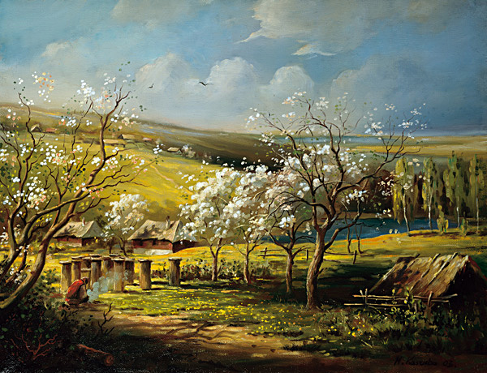

Kdysi dávno v jedné malé vesničce bydlela moc pěkná dívenka se svým tatínkem. Žili šťastně a všichni ve vesnici je měli rádi, nicméně dívence chyběla maminka, která již před dávnou dobou zemřela. Dívka si často povzdychala nad tím, že se nemá komu svěřovat a že práce v domácnosti se jí hromadí. To víte, vztah mezi dcerou a maminkou je velmi odlišný od vztahu s tatínkem. Naštěstí ale ve vesnici žila hodná teta, která měla také dcerušku, s níž si naše dívka velmi ráda hrála. Dívky spolu rády chodívaly do polí plést věnečky a ostatním lidem se v polích velmi snadno schovaly, protože obě dvě měly vlasy v barvě obilí. Rády si z lidí tropily žertíky. Když například někdo ještě v poledne zůstal na poli, dívky si potřely obličej hlínou, na hlavu si položily věneček z polního kvítí a obilí, do ruky vzaly srp a ubohého pracanta téměř k smrti vystrašily. Ten pak pelášil domů a všem barvitě popisoval, jak ho chtěly zabít dvě polednice, které divoce pobíhaly po polích. Když pak ještě večer vášnivě prohlašoval, že se na pole už nikdy nevrátí, oběma dívkám se na obličeji objevil záludný úsměv vyjadřující lišáckou spokojenost. Naše dívenka ještě často zůstávala se svojí kamarádkou v domečku hodné tety, která jí upravovala vlasy a povídala zajímavé příběhy. Jednoho dne, když si takhle dívka s tetou povídala u ohně, teta najednou navrhla: „Tvůj tatínek má jistě hodně práce a chybí mu ženská ruka.“ Dívka popotáhla nosem a přikývla. „Co kdybychom to udělali takhle,“ pokračovala teta, „ráda bych si tvého tatínka vzala za muže, stejně máme dva veliké domy a jeden nám všem bohatě stačí.“ Dívce se rozzářily oči a slíbila, že to tatínkovi navrhne. Tatínek byl ze začátku neochotný, pořád ještě neoplakal ztrátu své milované ženy, kterou z celého srdce miloval, ale nakonec souhlasil, protože si uvědomil, že to tak bude pro všechny, a hlavně pro jeho vlastní dceru, lepší.

Obrázek: Marian Kaszuba
Ze začátku bylo vše v pořádku, teta, nová macecha naší dívky, se o obě děti vzorně starala. Česala jim vlasy se stejnou náklonností a ráda si povídala. Ovšem postupem času, jak dny plynuly, se macecha začala více a více věnovat jen své vlastní dceři a na naši dívku zapomínala. Pouze její vlastní dcera dostávala ten nejčerstvější chléb, nejlepší kousek masa a různé pochoutky dovezené od cizinců. Dokonce začala být hrubá i na tatínka, který s tím ovšem nemohl nic dělat. „Vezmi dobytek na pastvu,“ poručila jednou macecha dívce, která bez otálení poslechla. Na cestu dostala pouze malý uzlíček s kouskem chleba a sýra. Na kopci, na němž se rozprostírala veliká pastvina, bylo neskutečné horko. Slunce pálilo a dívce se motala hlava. Ani ve stínu velikého stromu to nebylo o nich lepší. Když už dívce úplně vysychal obličej a měla hlad a žízeň, přišla k ní jedna veliká Kráva. „To je zvláštní,“ řekla dívka, „tebe jsem tu ještě neviděla.“ Kráva však na nic nedbala a přistoupila k dívce, která vstala, protože ji zaujaly kravské rohy. Když se tak na ně dívka dívala, Kráva natočila hlavu a z jednoho rohu začalo vytékat mléko. Dívka na nic nečekala a začala pít, měla neskutečnou žízeň. Jakmile dívka dopila, Kráva natočila hlavu na druhou stranu a z druhého rohu začalo vypadávat jídlo, to nejčerstvější a nejlepší. Když se dívka dosyta najedla a ulehla pod strom, Kráva se vrátila zpět doprostřed stáda.
Po několika dnech to začalo být maceše divné. „Jak je jen možné,“ přemýšlela, „že moje vlastní dcerka je tak hubená a ta nevlastní tak veselá a plná života?“ Začalo jí to vrtat hlavou, a tak se jednoho dne rozhodla, že bude nenápadně svou nevlastní dceru na pastvě z houští sledovat. Bylo zrovna poledne, když dívka odpočívala pod stromem. Jako každý den i nyní k ní Kráva nezapomněla přijít a pořádně ji nasytit. Když to macecha uviděla, dostala strach. „V tom budou nějaká kouzla,“ pomyslela si, „nebo bohové. Ach, to snad ne.“ Okamžitě se vrátila domů a rozhodla se, že svou nevlastní dceru vyžene z domu. Poručila otci, aby svou dceru zavedl do nejhlubšího lesa, kde by ji nechal. Otec měl z macechy strach a bál se, že by mu odmítnutí jejího příkazu přineslo jen posměch. Ale svou dceru nade vše miloval a rozhodně nemínil ji tam navždy nechat. „Hned se pro tebe vrátím, dceruško,“ řekl otec, „tvá nová maminka vychladne a určitě tě začne postrádat.“ Když odcházel, dívka se zabalila do kožichu a usnula. Pod velikou Borovicí jemně foukal vánek, který hladil dívčiny tváře. Najednou se však něco v lese pohnulo, něco tajemného, co dívku probudilo. Dívka se rozhlížela, ale zprvu nic neviděla. Až nakonec se z lesa vynořil člověk, který měl na Koni přivázané dvě truhlice, z nichž jedna byla hezky zdobená, drahými kameny vyložená, a druhá poněkud zchátralá ze starého dřeva. „Neboj se, děvenko,“ řekl vlídně muž, „jsem tvůj pradědeček, dědeček tvojí milé zesnulé maminky.“ Mezitím opatrně sundal obě truhlice ze svého Koně. „Mám pro tebe dárek,“ řekl muž, „ale musíš si ho sama zvolit podle svého uvážení, stejně, jako si kdysi dávno měli muži vybrat mezi dvěma ostrými kamínky.“ Dívka ten příběh o kamenech Pravdy a Křivdy, krvi a křemenu moc dobře znala, ale poučku, která z něho plynula, vlastně ani nepotřebovala, jelikož její srdce bylo dobré a upřímné. „Milý pradědečku,“ odpověděla dívka a ještě celá roztřesená zimou se uklonila, „prosím, ráda bych si vzala tu starou truhlici.“ Její pradědeček se usmál. „Je to tvá volba,“ odpověděl a zmizel. Když se druhý den ráno dívka probudila, spatřila vedle sebe ležet tu starou truhlici.
Netrvalo dlouho a do lesa přišel dívčin tatínek, který ji objal a řekl: „Je mi jedno, co ta ženská chce, ty jsi moje dcera. Jsi mnohem důležitější než nějaká moje úcta nebo i život.“ V jeho srdci planula upřímná odvaha pramenící z čisté lásky k jeho dceři, ten nejkrásnější pocit na světě. Najednou si ale tatínek všiml té staré truhlice a zeptal se dívky, kde k ní přišla. Když si tatínek vše poslechl, rozhodl se s dívkou a truhlicí vrátit zpět domů. Na zpáteční cestě ale uviděli na Zemi malého ptáčka zpěváčka, jak tam celý udýchaný leží. „Měli bychom mu pomoci,“ řekla dívka, „donést mu vody z potoka.“ Tatínek souhlasil a opatrně ptáčka nakrmil a opláchl. Zanedlouho se objevila jeho maminka, zpěvná Drozdice, která promluvila: „Pomohli jste mému děťátku, tak já na oplátku pomůžu teď vám. Pojďte za mnou.“ Tatínek vzal truhlici do jedné ruky, dívku chytil druhou a oba vyrazili za Drozdicí do hlubokého lesa. Ze začátku bylo všude temno, ale pak se stromy začaly zvyšovat, až se téměř dotýkaly Nebes. Dívka s tatínkem došli až k půvabné dřevěné chaloupce, na jejíž dveře tatínek zaklepal. Když se otevřely, všichni uviděli ve dveřích stát krásného muže s rozevlátými vlasy. Byl to sám Vítr. „Čeho si žádáte?“ zeptal se. „Ale,“ odpověděla Drozdice, „tady ty upřímné a hodné lidi týrá dívky macecha. Potřebujeme proti ní pomoci.“ „Proti zlé ženě,“ odpověděl Vítr, „si vezměte tohle.“ Vítr vešel do chaloupky a přinesl odtamtud lněný vak, který byl prapodivně nafouknutý. Dívka i tatínek poděkovali. „Až se žena rozhodne vás znovu týrat,“ pokračoval Vítr, „řekněte: Devatero Větrů z pytle ven.“ Nadechl se a dodal: „Neb jedině tak je možné ji uklidnit.“
Netrvalo dlouho a tatínek s dceruškou dorazili zpět do vesnice a do svého domečku, kde na ně už čekala macecha. „Řekla jsem,“ promluvila a vzala koště, „aby mi ta čarodějnice už nikdy nechodila na oči! Pryč!“ Avšak otec neustoupil. Otevřel vak a zakřičel: „Devatero Větrů z pytle ven.“ Najednou z pytle vyskákalo asi devět chlapíků a všichni se vrhli na macechu. Ta křičela a snažila se bránit, ale nebylo jí to nic platné. Devatero Větrů jí všechen jed ze srdce vymlátilo. Když bylo dílo dokonáno, chlapíci se vrátili zpět do pytle. „Tak se podíváme,“ řekl spokojený tatínek, „co máš v té staré truhlici, dceruško.“ Opatrně ji otevřeli a zůstali úžasem stát. Uvnitř byly kožešiny, zlato, stříbro, drahé kamení, sůl, různé pochoutky a další věci, o kterých se jim ani nesnilo. Podobně jako kouzelná Kráva i toto byl dar z jiného světa, v kterém dlí sama Matka Země.
Od té doby se všichni ve vesnici měli dobře. Macecha už byla hodná i na svoji nevlastní dcerku a byla muži vždy po ruce. Naše dívka si brzy našla mládence a spolu se odstěhovali do krásného domečku, v kterém žili šťastně až do smrti a vychovali spoustu krásných a zdravých dětí. Pokud se ptáte, co se stalo s nevlastní sestrou naší dívky, tak je třeba říci, že ta zprvu velmi naší dívce záviděla. Rozhodla se také vydat do lesa, ale nikomu po cestě nepomáhala a jako dar si vybrala tu krásně zdobenou truhlici. Neuvědomovala si, že podoba může klamat. Na zpáteční cestě ji čekaly samé nepříjemnosti, protože zvířátka a ptáčkové, kterým odmítla pomoc, ji sráželi k Zemi a vyháněli pryč z lesa. Doma pak, když svou truhlici otevřela, našla v ní jen netopýří trus. Od té doby se zklidnila a už nikdy více své nevlastní sestře nezáviděla. To víte, někdy je potřeba lidem názorně ukázat, co jsou vlastně hluboko uvnitř zač, aby byli ochotní se napravit.